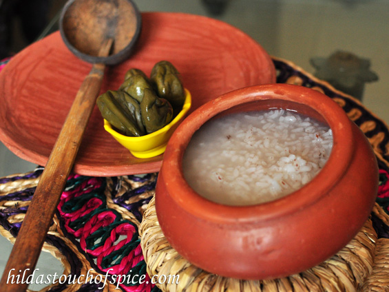

CUISINES:
Seafood, coconut milk, rice, and local spices are main ingredients of Goan cuisine. Being a state with a tropical climate, the spices and flavours are intense. Use of kokum is another distinct feature.
Kingfish (Vison or Visvan) is the most common delicacy. Others include Pomfret,Among the shellfish are Crabs, Prawns, Tiger Prawns, Lobster, Squid and Mussels.
The Portuguese have had a pronounced influence on Goan cuisine. They introduced Potatoes, Tomatoes, Pineapples, Guavas and Cashews. But the most significant contribution is the introduction of the spicy Peri-Peri Chilli, which is the most important part of Goan spices.
HERE ARE TOP 5 DISHES YOU MUST TRY IN GOA :
1. Goan Fish Curry: Goan fish curry or the Xitti Kodi is the staple diet of every Goan making it a famous food of Goa. The Goan fish curry is loaded with various spices along with coconut.
2. Patolea: Patolea is a sweet dish that may also be consumed along with tea. For the dish, Goan red rice is used with tamarind leaves (Haldi ka patta). A filling of coconut, Goan jaggery, and cardamom is made and stuffed inside the leaves.
3. Goan red rice: Also called ukda rice,And pej in local language . An unpolished thick-grained rice with a reddish-brown colour and nutty flavour, its firm texture makes it excellent for soaking up coconut curries.
4.Samarachi Kodi: Samarachi Kodi is a dish prepared during the monsoons. It is a dry prawn curry. Dry prawns, onion, coconut, tamarind and tomatoes are the main ingredients which a friend with a spicy, tangy masala. Coconut milk is added to give it the typical flavour and texture.
5.Prawns Xeque Xeque: Prawns Xeque Xeque is a classic Goan dish of prawns, coconut milk, tomatoes, green chillies and onions. The masala is mixed with prawns and added to sauteed onions, garlic and tomatoes. The coconut milk is added gradually. This Goan dish can be accompanied with Sannas, dosas or fugias.
The cuisine of Goa is a delicious reflection of its history and heritage. It is influenced by its Hindu origins, four hundred years of Portuguese colonialism, and modern techniques. No other cuisine in India can claim such contrasting influences.

